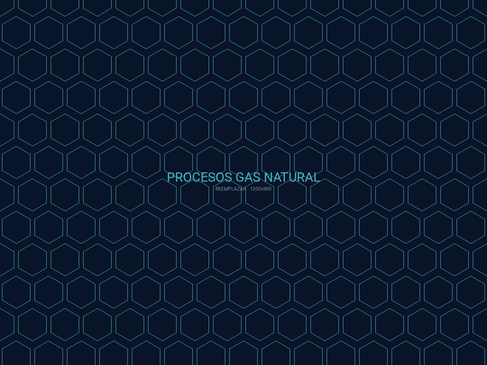

SVC.01 COREProcesos de Gas Natural
Estaciones de separación, medición, regulación y odorización para gasoductos troncales y de transporte. Cumplimiento normativo Enargas.
APLICACIONES
Sep. · Med. · Reg. · Odor.
PROYECTOS
NEUBA II · Vaca Muerta